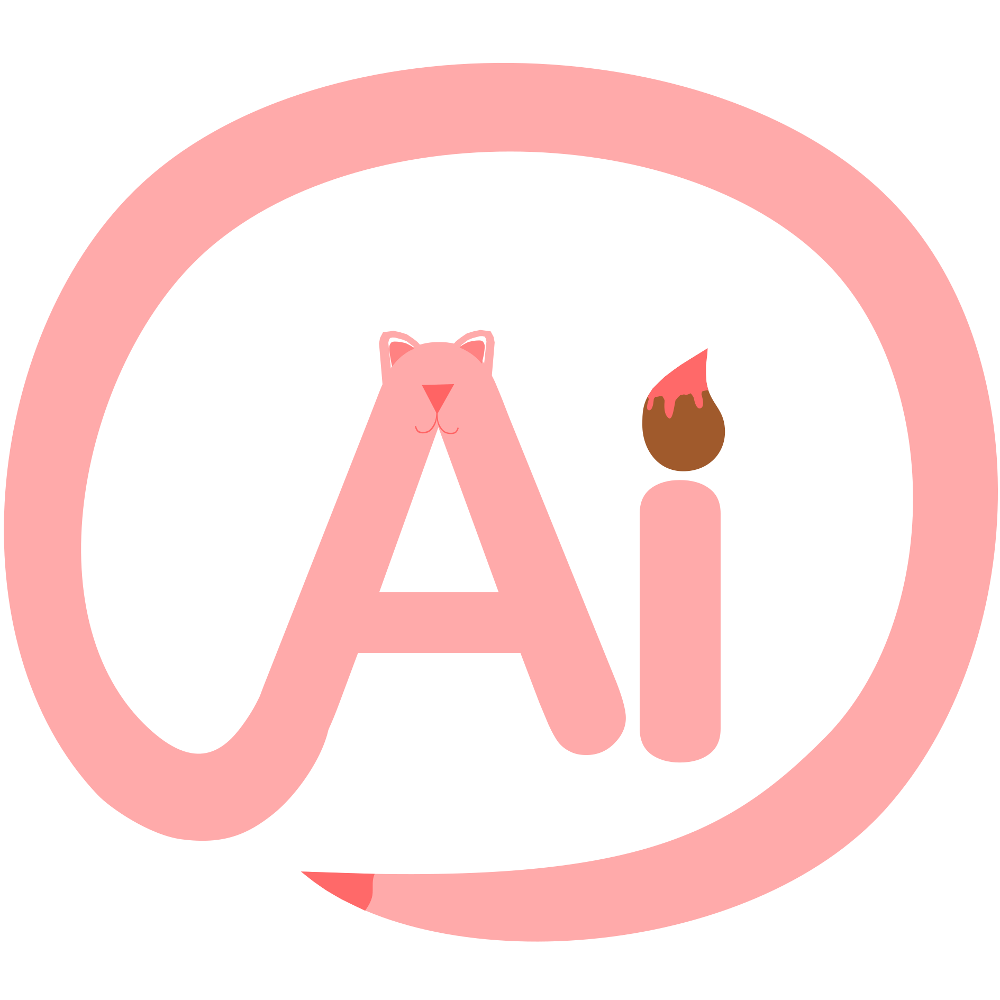
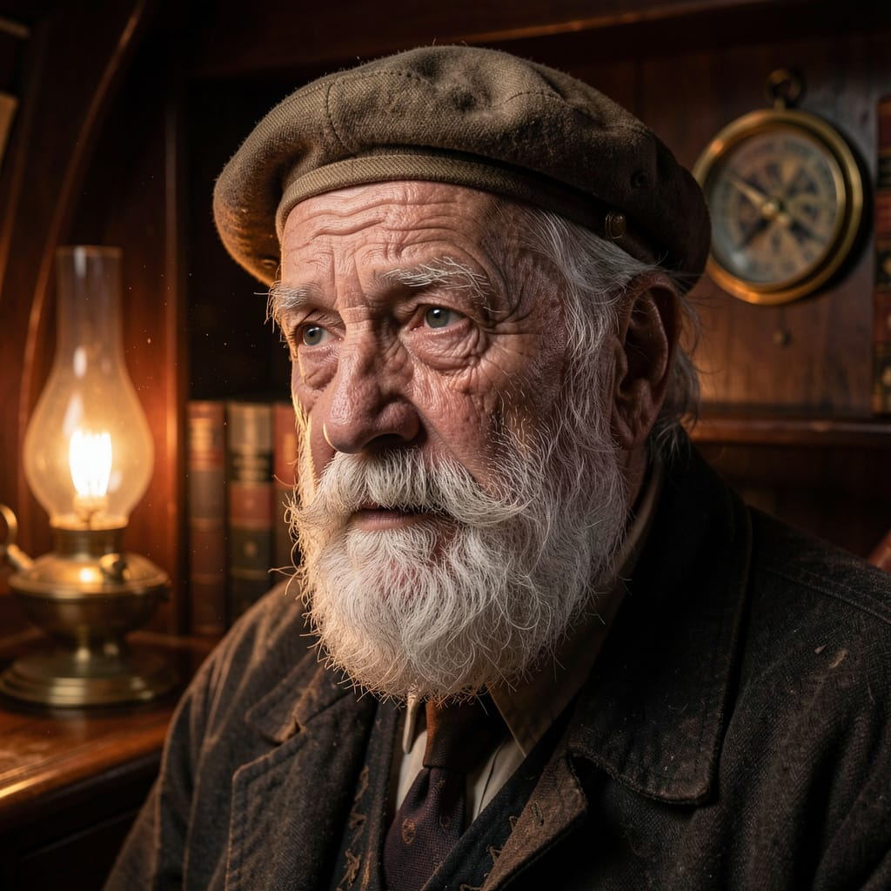
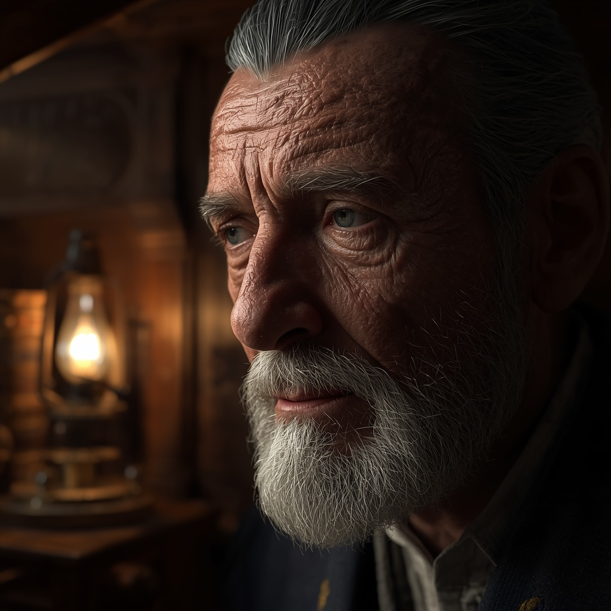
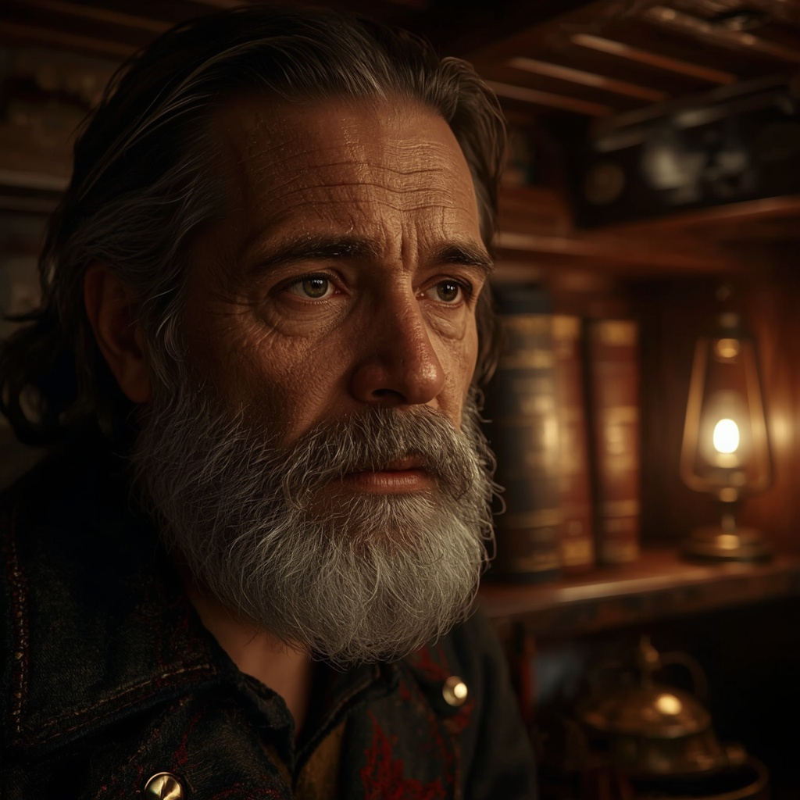
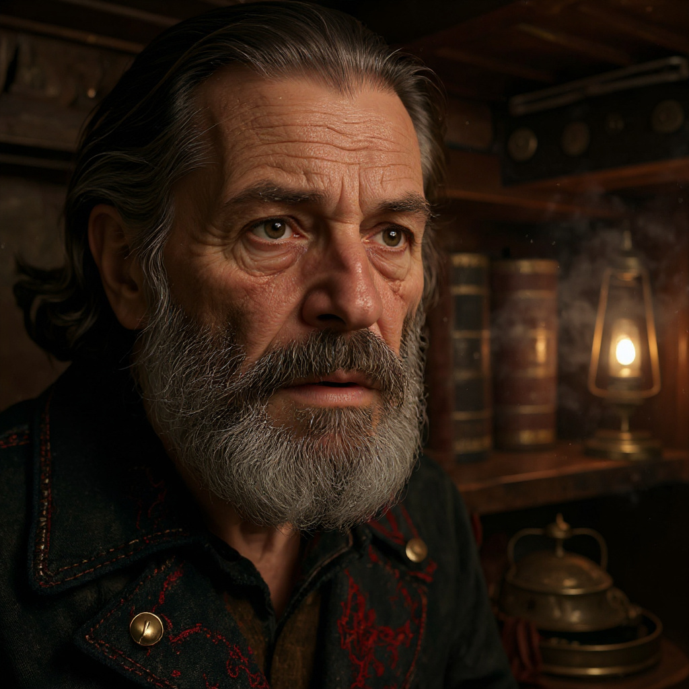

Експерименти з різними ШІ та їх порівняння
1. Растрова графіка
"Cinematic close-up portrait of an elderly sea captain inside a dimly lit wooden ship cabin. His face is weathered with deep, highly detailed wrinkles and realistic skin pores. He has a thick, white, coarse beard where individual hairs are visible. He is looking slightly away from the camera with a thoughtful expression. Lighting: dramatic volumetric chiaroscuro effect, with a warm golden light coming from a single oil lamp on the side, casting soft shadows and highlighting the texture of his skin and the dust particles in the air. Background: out of focus (bokeh effect), showing old leather-bound books, a brass compass, and polished dark wood walls. Shot on 85mm lens, photorealistic, 8k resolution, hyper-detailed textures, intricate clothing fabric, moody atmosphere."

Отримуємо зображення людини за відповідним запитом. Генерація зайняла всього до 5 секунд. Нейромережа з першого разу точно вловила уяву промпту: згенерувала старого чоловіка, додала детальну атмосферу теплого освітлення, книги та чітко зображала компас і частинки пилу у повітрі, які підсвічуються світлом. При чому, на сайті можна вручну відредагувати зображення змінивши освітлення, контраст й інше.

Тут все складніше. Текстура шкіри виглядала неприродно («пластиковий» ефект), деталі фону було пропрацьовано недостатньо. Модель, яка надана за замовчуванням, не підходить для складного фотореалізму та великих деталізованих запитів.

Тепер ми замінили запропоновану спочатку модель на Lucid Realism та стиль зображення на динамічний, що зможе виправити проблему з нереалістичністю генерацій. У результаті наше фото вже більш відповідало запиту, проте деталі на фоні все одно були пропрацьовані недостатньо чітко.

У режимі редагування дописали деталі, яких не вистачало, та отримали кінцевий результат. Зміна моделі, додавання антуражних елементів та внесення змін у режимі редагування кардинально покращили деталізацію. Текстура одягу, зморшки та об'ємне світло виконані професійно, але деякі слова промпту щодо фону все одно були пропрацьовані частково.
2. Векторна Графіка
"A detailed vector illustration of a majestic mechanical owl sitting on a thick tree branch, steampunk style. The owl has glowing brass gears, intricate clockwork feathers, and large glass lens eyes. Deep midnight blue background, warm gold and bronze metallic highlights. Sharp clean lines, flat vector shapes, smooth gradients, no photo realism, scalable vector graphic."

Зображення згенероване за допомогою Recraft

Зображення згенероване за допомогою Kitti
- Recraft є кращим інструментом для технічного та комерційного веб-дизайну. Його алгоритм створює цілісну геометричну точність, чіткі замкнуті контури та правильні форми (кола, лінії), які легко редагувати по точках у графічних редакторах. Файли від Recraft мають менше «сміття» і краще масштабуються без втрати сенсу деталей.
- Kitti орієнтований на художню ілюстрацію та дизайн-плакати. Його графіка має виразний «живий» стиль мазку від руки з глибокими тінями та штрихами. Проте, з точки зору точних зор векторизації, така модель створює значно більше дрібних векторних ліній — растрових артефактів, перенесених у вектор, — що ускладнює подальше ручне редагування окремих елементів.
Рекомендація: Для створення іконок, інтерфейсів та точних векторних ілюстрацій доцільно обрати Recraft. Для створення складних художніх принтів, постерів та вигадних логотипів кращий результат демонструє саме Kitti.